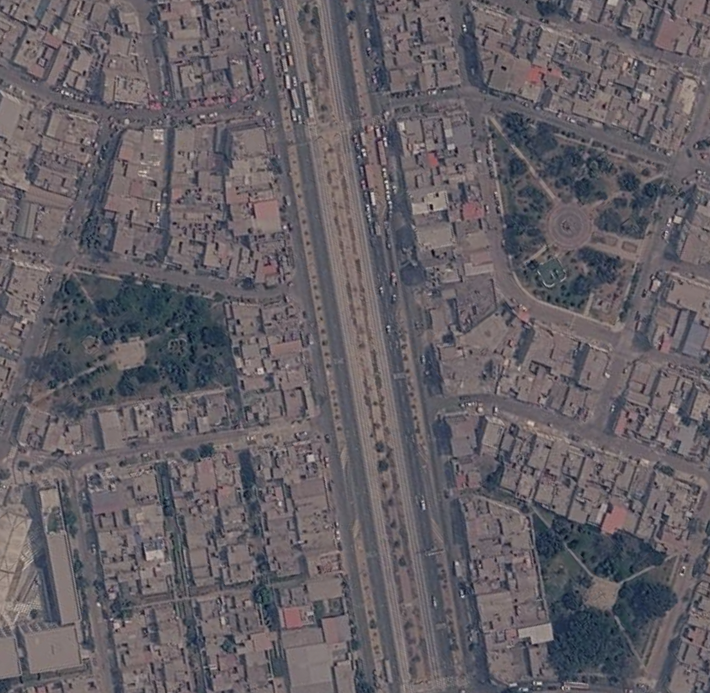
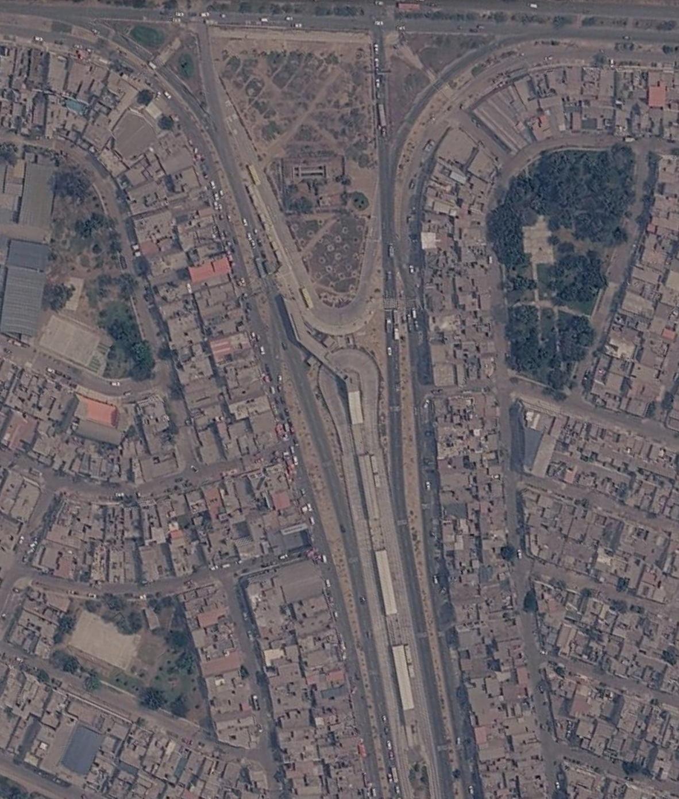
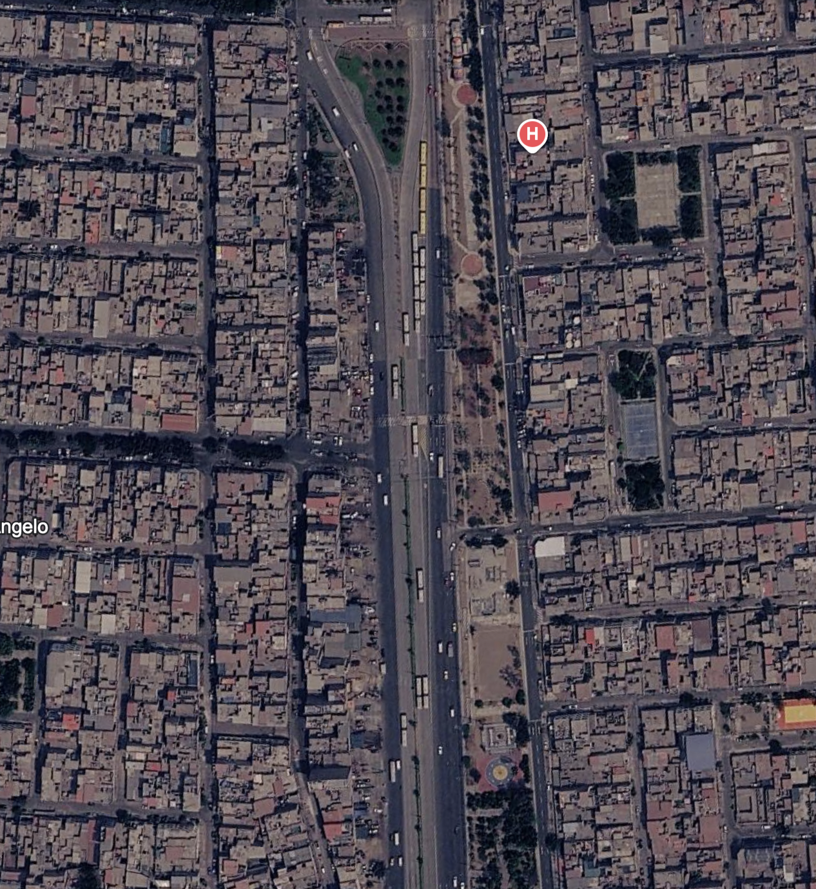
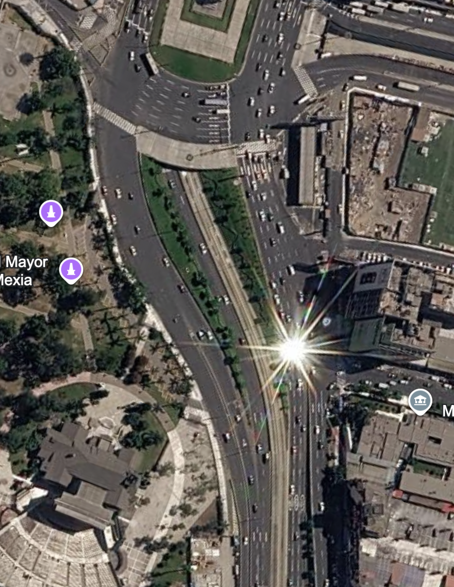
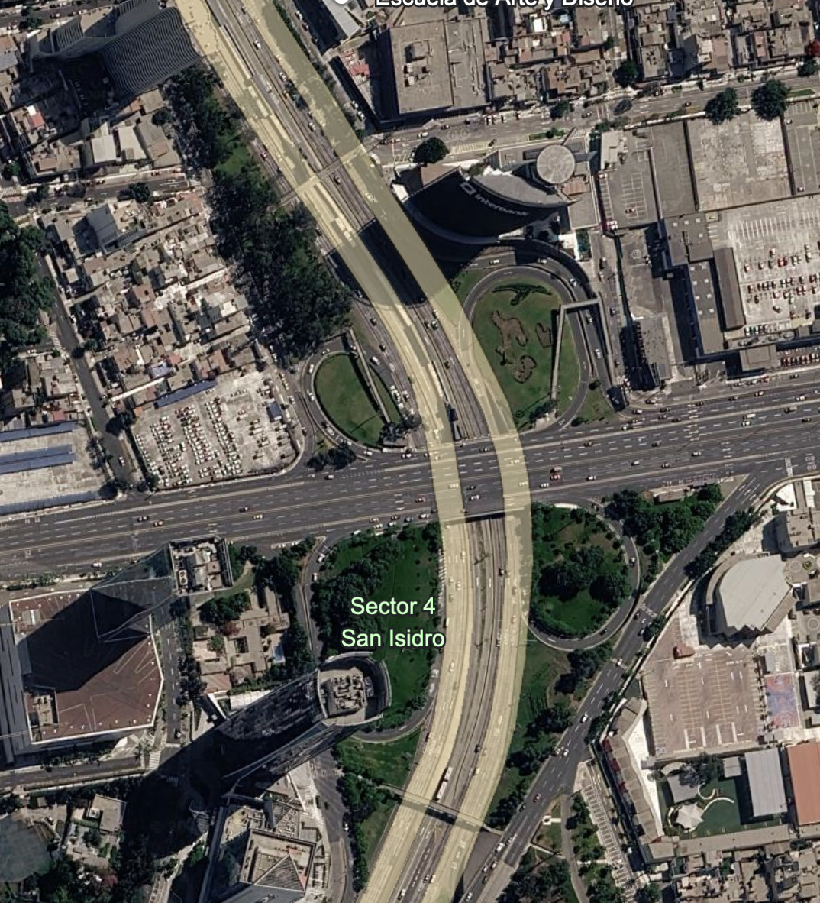
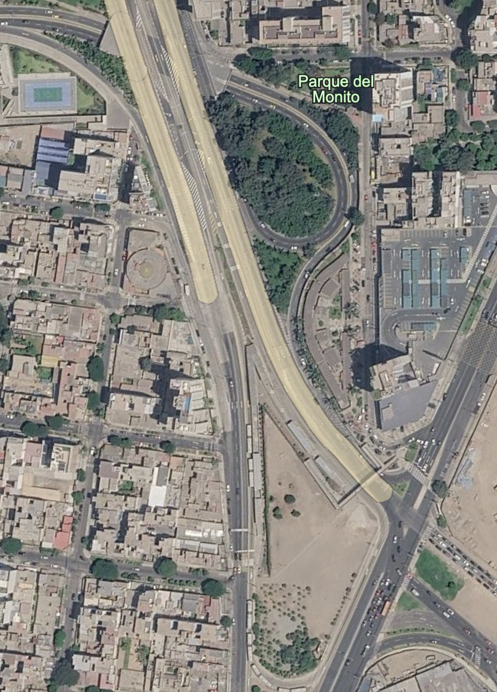
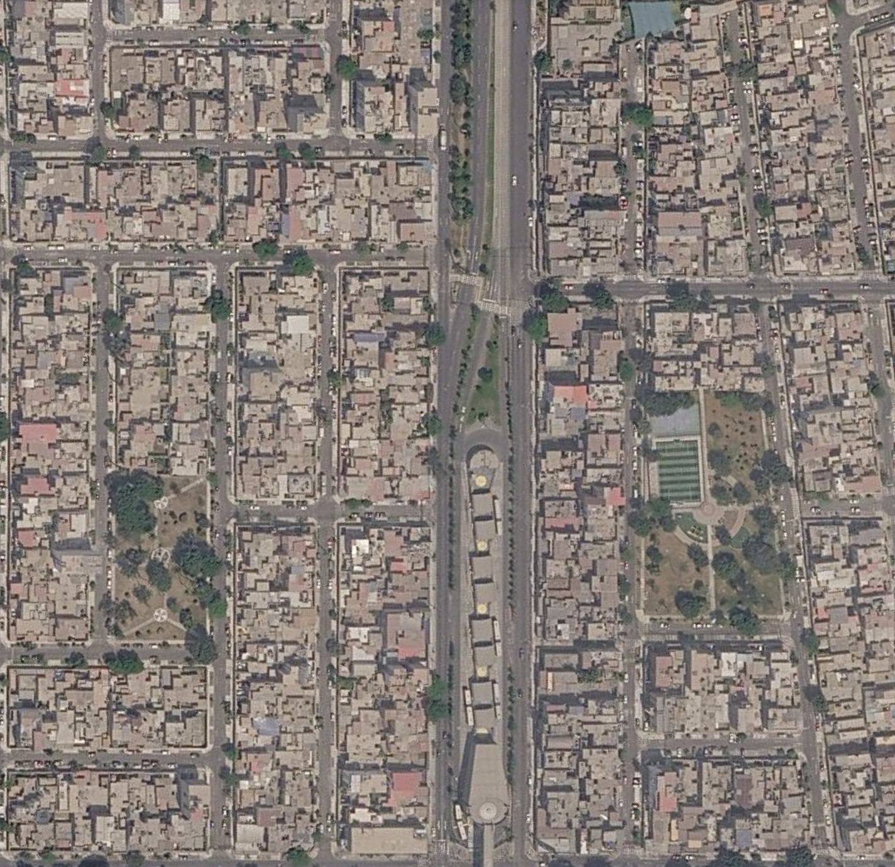

── Attaching core tidyverse packages ──────────────────────── tidyverse 2.0.0 ──
✔ dplyr 1.1.4 ✔ readr 2.1.5
✔ forcats 1.0.0 ✔ stringr 1.5.1
✔ ggplot2 3.5.2 ✔ tibble 3.2.1
✔ lubridate 1.9.4 ✔ tidyr 1.3.1
✔ purrr 1.0.4
── Conflicts ────────────────────────────────────────── tidyverse_conflicts() ──
✖ dplyr::filter() masks stats::filter()
✖ dplyr::lag() masks stats::lag()
ℹ Use the conflicted package (<http://conflicted.r-lib.org/>) to force all conflicts to become errorsExploratory_Project_Metropolitano_Areas_Verdes
Reporte Exploratorio
Este reporte está basado en observaciones al utilizar el servicio de transporte público Corredor Metropolitano de Lima, Perú. Existe una diferencia observable entre el diseño, mantenimiento y beneficios a lo largo de la ruta desde Estación Chimpu Ocllo (Lima Norte) hasta Estación Matellini (Lima Sur).
Metodologia
En este proyecto exploratorio se utilizó Copernicus Browser con imagenes Sentinel-2 L2A y el Índice de Vegetación de Diferencia Normalizada (NDVI, por sus siglas en inglés) para extraer datos sobre la calidad de las áreas verdes que son parte de los proyectos. Estas areas verdes fueron divididas en dos categorias segun su función urbana: 1. Parque Entrada: Corresponde a los espacios públicos verdes de mayor envergadura ubicados en el entorno inmediato de las estaciones elegidas. Esta categoría abarca tanto las zonas consolidadas (con vegetación activa) como aquellas áreas proyectadas que actualmente se encuentran no consolidadas o en estado de degradación. 2. Franjas Verdes: Comprende los componentes longitudinales de infraestructura verde dispuestos a lo largo del corredor de transporte, localizados específicamente en el separador central (mediana) o en los márgenes laterales de los carriles segregados próximos a las estaciones.
Procesamiento
Rows: 36 Columns: 7
── Column specification ────────────────────────────────────────────────────────
Delimiter: ","
chr (3): Estación, Tipo, Distrito
dbl (3): Lat, Lon, NDVI
date (1): Fecha
ℹ Use `spec()` to retrieve the full column specification for this data.
ℹ Specify the column types or set `show_col_types = FALSE` to quiet this message.# A tibble: 36 × 7
Lat Lon NDVI Estación Tipo Fecha Distrito
<dbl> <dbl> <dbl> <chr> <chr> <date> <chr>
1 -11.9 -77.0 0.107 Chimpu Ocllo Parque Entrada 2026-06-13 Carabayllo
2 -11.9 -77.0 0.209 Chimpu Ocllo Parque Entrada 2026-06-13 Carabayllo
3 -11.9 -77.0 0.165 Chimpu Ocllo Parque Entrada 2026-06-13 Carabayllo
4 -11.9 -77.0 0.055 Chimpu Ocllo Franja Verde 2026-06-13 Carabayllo
5 -11.9 -77.0 0.0658 Chimpu Ocllo Franja Verde 2026-06-13 Carabayllo
6 -11.9 -77.0 0.202 Chimpu Ocllo Franja Verde 2026-06-13 Carabayllo
7 -12.0 -77.1 0.0516 Naranjal Parque Entrada 2026-06-13 Independencia
8 -12.0 -77.1 0.482 Naranjal Parque Entrada 2026-06-13 Independencia
9 -12.0 -77.1 0.0839 Naranjal Parque Entrada 2026-06-13 Independencia
10 -12.0 -77.1 0.149 Naranjal Franja Verde 2026-06-13 Independencia
# ℹ 26 more rows# Yo recolecté los datos y corregí cualquier incosistencia antes de guardar el archivo csv.
# Orden de los distritos de Norte a Sur
distritos_norte_a_sur <- c("Carabayllo","Independencia","Cercado de Lima", "San Isidro","Barranco/Miraflores", "Chorrillos")
# Promedios
# Promedios_estaciones_general <- areas_verdes |>
# group_by(Distrito) |>
# summarize(Promedio_NDVI = mean(NDVI)) |>
# mutate(Distrito = factor(Distrito, levels = distritos_norte_a_sur)) |>
# arrange(Distrito)
#
# kable(Promedios_estaciones_general)
Promedios_estaciones_tipo <- areas_verdes |>
group_by(Lat,Lon,Distrito, Tipo) |>
summarize(Promedio_NDVI = mean(NDVI), .groups = "drop") |>
mutate(Distrito = factor(Distrito, levels = distritos_norte_a_sur)) |>
arrange(Distrito)
kable(Promedios_estaciones_tipo)| Lat | Lon | Distrito | Tipo | Promedio_NDVI |
|---|---|---|---|---|
| -11.90 | -77.04 | Carabayllo | Franja Verde | 0.1075000 |
| -11.90 | -77.04 | Carabayllo | Parque Entrada | 0.1604667 |
| -11.99 | -77.06 | Independencia | Franja Verde | 0.1316000 |
| -11.98 | -77.06 | Independencia | Parque Entrada | 0.2058000 |
| -12.06 | -77.04 | Cercado de Lima | Franja Verde | 0.0747333 |
| -12.06 | -77.04 | Cercado de Lima | Parque Entrada | 0.5031000 |
| -12.09 | -77.02 | San Isidro | Franja Verde | 0.2178000 |
| -12.09 | -77.02 | San Isidro | Parque Entrada | 0.6538333 |
| -12.14 | -77.02 | Barranco/Miraflores | Franja Verde | 0.1213667 |
| -12.14 | -77.02 | Barranco/Miraflores | Parque Entrada | 0.2908000 |
| -12.18 | -77.01 | Chorrillos | Franja Verde | 0.4266000 |
| -12.18 | -77.01 | Chorrillos | Parque Entrada | 0.2779000 |
write_csv(Promedios_estaciones_tipo, "Promedios_estaciones_tipo.csv" )Promedios_estaciones_tipo |>
ggplot(aes(x = Distrito, y = Promedio_NDVI, fill = Tipo)) +
geom_bar(stat = "identity", position = "dodge") +
labs(
x = "Distritos (De norte a sur)",
y = "Promedio NDVI (Índice de Vegetación de Diferencia Normalizada)",
fill = "Tipo de área verde") +
scale_fill_viridis_d(option = "E", end = 0.85) +
theme_classic() +
theme( legend.position = c(0.18, 0.80))Warning: A numeric `legend.position` argument in `theme()` was deprecated in ggplot2
3.5.0.
ℹ Please use the `legend.position.inside` argument of `theme()` instead.
Reference pictures from Google Earth

{group=“my-group”}
{group=“my-group”}{group=“my-group”}

{group=“my-group”}{group=“my-group”}

{group=“my-group”}
{group=“my-group”}
{group=“my-group”}
{group=“my-group”}